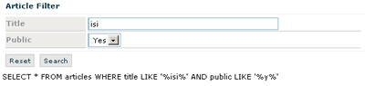

DataFilter
DataFilter extends DataForm, it is a form-filter heper.
It build a complete SELECT sql query, based on the user input.
You can build a filter form with your custom fields (like in DataForm).
It is a template based component.
Note, this component is based upon fields. Fields are a collection of classes to manage single items of a form.
This component is thought to work in conjunction with DataGrid or DataTable.
It is a convenient way to filter lists.
It use a persistence system (php session variables) to store field status (to enable pagination), so it depend from rapyd_session class.
Sample:
constructor:
DataFilter($title, $datasource)
params: string $title (can be empty), mixed $datasource
main properties:
back_url
string back_url is the link-back, it can be used to join a DataEdit (that edit a single record) with a DataGrid (that can scaffold records)
fields:
In a DataFilter you can append fields (inputs, extareas etc..) like in a DataForm
Note: you can manage clauses and operators (of WHERE) directly on fields:
main methods:
button($name, $caption, $action, $position="BL")
script($script, $status="create")
from DataForm
buttons($button[,$button..])
possible params are: "reset", "search"
(note: rapyd support multilanguage, so you can customize labels in /system/application/rapyd/language)
build()
build output and eventually process actions (means: prepare a sql SELECT statement with the built WHERE)
output:
output
string, the built html form.